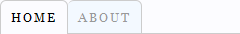
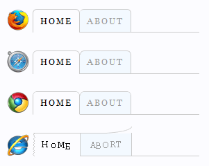

Here is a quick tip I just discovered while messing around with my custom.css style sheet. This tip shows you the CSS code that turns this:
into this:

Firefox vs. Safari vs. Chrome
Since rounded corners are relatively new, the browser support isn’t consistent. In my opinion, Firefox does the best job of rendering rounded corners, Safari and Google Chrome do a decent job, and in typical fashion…Internet Explorer doesn’t support rounded corners at all. Here’s a comparison:

Browser-specific CSS Properties
Firefox
/* All 4 corners */ -moz-border-radius /* Each individual corner */ -moz-border-radius-topleft -moz-border-radius-topright -moz-border-radius-bottomleft -moz-border-radius-bottomright
Safari & Chrome
/* All 4 corners */ -webkit-border-radius /* Each individual corner */ -webkit-border-top-left-radius -webkit-border-top-right-radius -webkit-border-bottom-left-radius -webkit-border-bottom-right-radius
Internet Explorer Special Instructions
CSS Code for Rounded Thesis Menu Tabs
Here is the CSS code that creates the rounded corners seen in the first examples:
/* Remove the border from the far left. */
ul.menu{border-left:0;}
/* Add the left border back in. If you change the color of the nav border in the WordPress admin panel, you will also have to manually change the left border color below. */
ul.menu li.tab-home a{
border-left:1px solid #CCC;
-moz-border-radius-topleft:.5em;
-webkit-border-top-left-radius:.5em;}
/* This creates the rounded borders. */
ul.menu li.tab a{
-moz-border-radius-topleft:.5em;
-webkit-border-top-left-radius:.5em;
-moz-border-radius-topright:.5em;
-webkit-border-top-right-radius:.5em;}
If you opted to NOT show your home page link in the navigation menu, then the CSS class .tab-home will need to be changed to .tab-1 in the code example above.